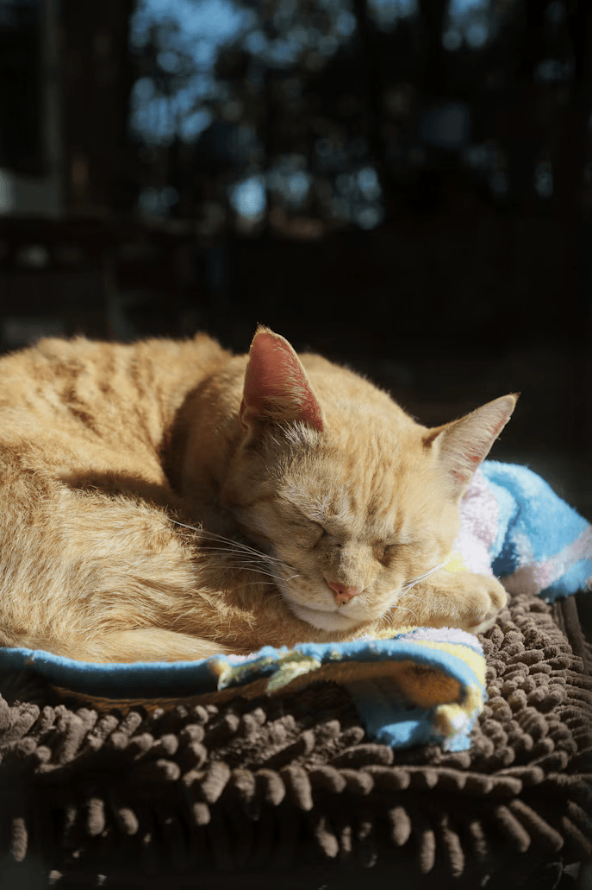
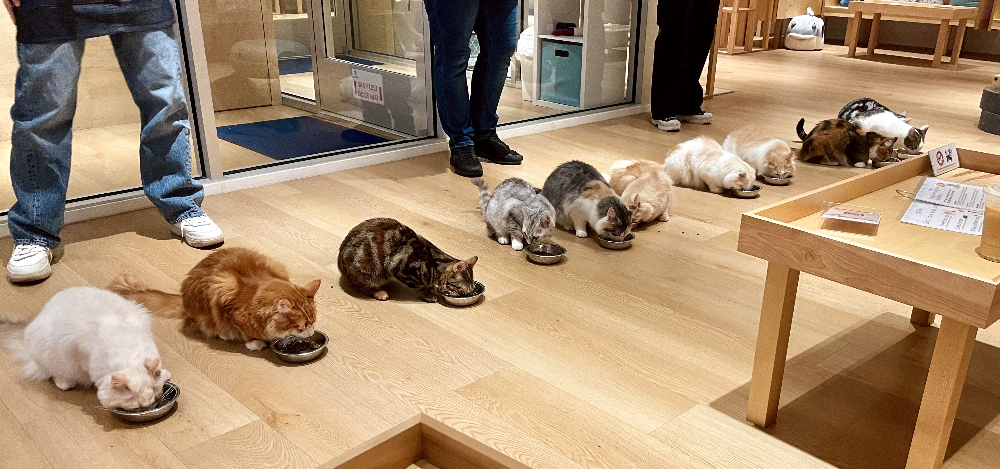
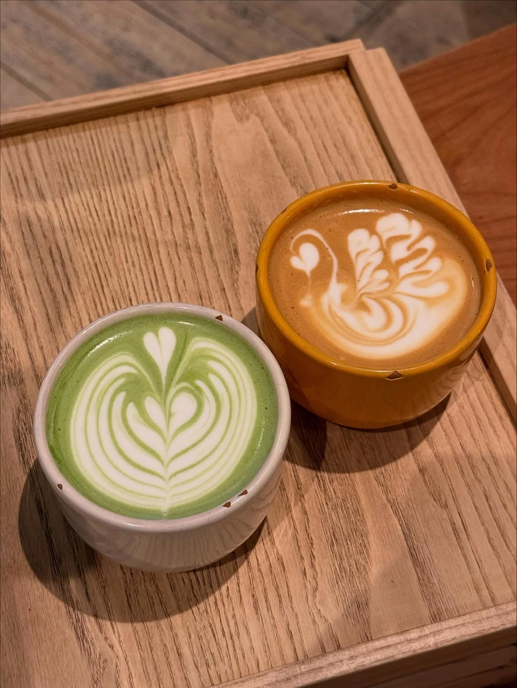
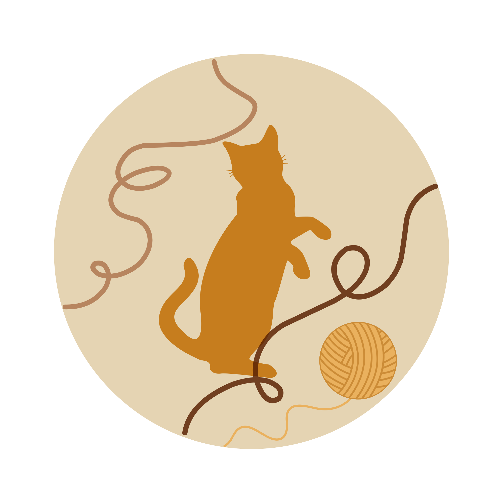
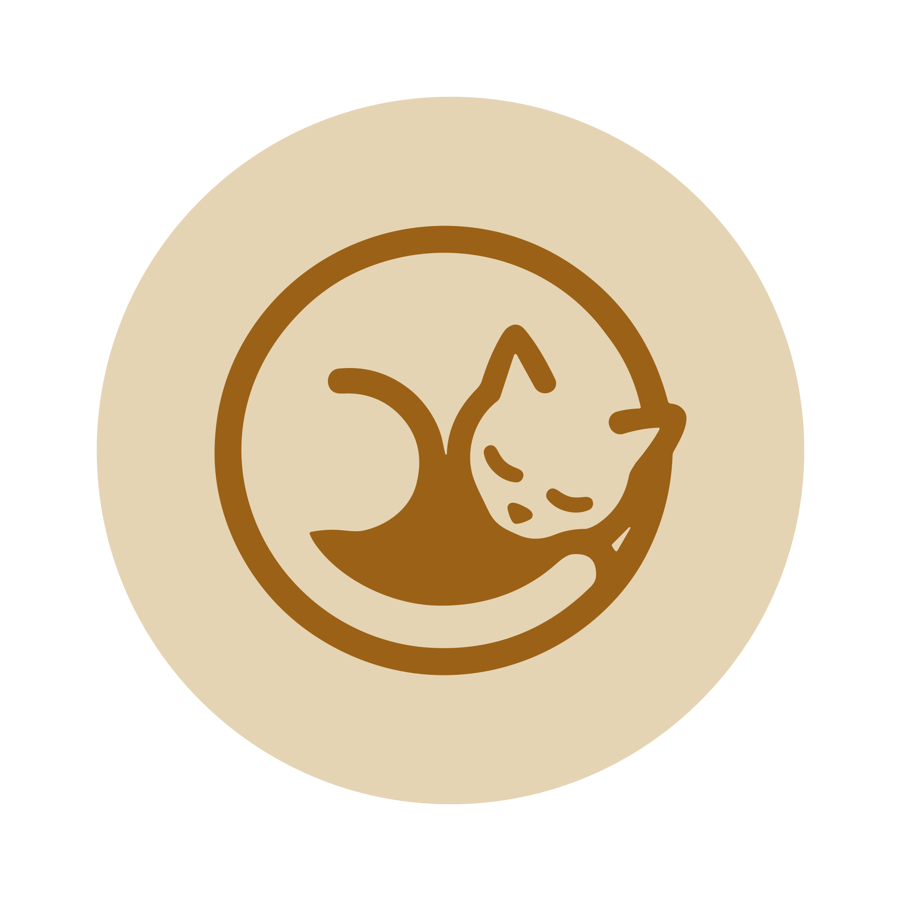

A warm cup. A cozy lap. A second chance.
Enjoy a warm cup of coffee and meet our lovable senior cats. At The Heirloom, every visit brings comfort, connection, and the possibility of a forever home.
Meet the Cats
View All Cats ⇒
The Café
Come for the coffee, stay for the cats! Settle into our cofy café with a delicious drink, a sweet treat, and wonderful company.
View MenuHours
Mon - Fri: -
Sat - Sun: -
-

Love Has No Age
Older cats still have so much affection, personality, and companionship to share.
-

Often Overlooked
Senior cats are often passed over younger cats and kittens, all while having just as much love to give.
-

Calm Companions
Many older cats enjoy quieter routines and make wonderful companions for a cozy.